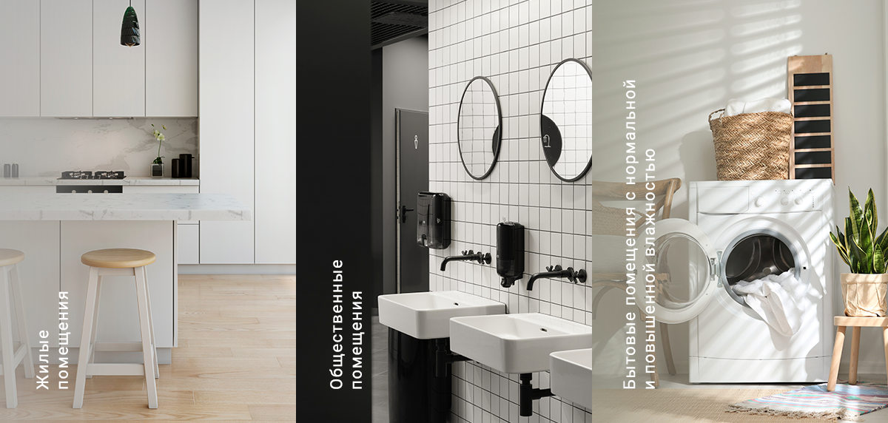

Подходит для установки
вместе с декоративными
панелями системы
Design Concept
Тихий, производительный и
энергоэффективный вентилятор
Вентс Эйс будет подходить
любому интерьеру,
а также будет эффективно удалять
загрязненный воздух,
не мешая своей работой
О системе Design Concept
Cистема Design Concept — это дизайнерское решение по оформлению вентиляции, состоящее из базы (вентилятор, решетка или диффузор) и ряда стильных панелей с разнообразием материалов, цветов и фактур, подходящими к базе.
Особенности вентилятора
Высокая производительность и бесшумность
Максимальный расход воздуха в сочетании с низким уровнем шума обеспечивается благодаря специальной крыльчатке, имеющей аэродинамическую форму и уникальной конструкции двигателя на резиновой виброгасящей вставке. Выходной патрубок вентилятора оснащен специальными выпрямителями потока воздуха, снижающими турбулентность, увеличивающими напор воздуха и способствующими снижению уровня шума.
Надежность
Двигатель оборудован защитой от перегрева и не требует технического обслуживания в течение всего периода эксплуатации.
Крыльчатка и корпус вентилятора изготовлены из высококачественного и прочного АБС-пластика, устойчивого к воздействию ультрафиолета.
Универсальность использования
Вентилятор рассчитан на непрерывную и периодическую работу.
Может крепиться к стене, воздуховодам или в вентиляционные шахты.
Использование
Модификации
Эйс К
Вентилятор оборудован обратным клапаном, предотвращающим возможные потери тепла и препятствует обратному потоку воздуха в помещение, когда вентилятор выключен.
Эйс Л
Вентилятор оборудован двигателем на шариковых подшипниках. Подшипники не нуждаются в обслуживании и имеют запас смазочного материала, достаточный для всего периода эксплуатации двигателя. Также использование такого двигателя позволяет монтировать вентилятор под любым углом.

Эйс Т
Оборудован регулируемым таймером задержки выключения. Таймер позволяет продлевать работу вентилятора от 2 до 30 минут после его остановки выключателем. Благодаря этому удается уменьшить влажность и удалить нежелательные запахи.
Эйс TH
Оборудованный регулируемым таймером задержки выключения и датчиком влажности. Встроенный датчик влажности контролирует работу вентилятора, отталкиваясь от уровня влажности в помещении. В случае превышения установленного уровня влажности вентилятор автоматически включается и работает до нормализации уровня влажности. При достижении нормального уровня вентилятор дорабатывает установленное на таймере время и выключается.
Эйс В
Вентилятор со шнурковым выключателем для ручного включения и выключения.
Эйс ВТ
Вентилятор оснащен таймером задержки выключения и шнурковым выключателем. Встроенный таймер задержки выключения позволяет продлевать работу вентилятора от 2 до 30 минут после его остановки выключателем. Благодаря этому удается уменьшить влажность и удалить нежелательные запахи.
Эйс ВТН
Оборудован шнурковым выключателем, регулируемым таймером задержки отключения, а также датчиком влажности. Запуск вентилятора может производиться с помощью шнуркового выключателя или автоматически после срабатывания датчика влажности. При достижении заданного уровня влажности начинает работу встроенный датчик задержки отключения.
Эйс 12
Вентилятор оборудован двигателем с низким напряжением (12 В), что позволяет безопасно использовать вентилятор в помещениях с повышенной влажностью, а также в местах с вероятностью прямого попадания воды (в ванных комнатах, саунах и т.п.).
Модельный ряд
| Модель | Ø, мм | м3/ч | дБА | Двигатель на подшипниках |
Таймер | Датчик влажности |
|---|---|---|---|---|---|---|
| Вентс 100 Эйс | 100 | 90 | 29 | |||
| Вентс 125 Эйс | 125 | 160 | 32 | |||
| Вентс 100 Эйс Т | 100 | 90 | 29 | ✔ | ||
| Вентс 100 Эйс ТН | 100 | 160 | 29 | ✔ | ✔ | |
| Вентс 125 Эйс Т | 125 | 160 | 32 | ✔ | ||
| Вентс 125 Эйс ТН | 125 | 160 | 32 | ✔ | ✔ | |
| Вентс 100 Эйс Л | 100 | 90 | 29 | ✔ | ||
| Вентс 125 Эйс Л | 125 | 160 | 32 | ✔ | ||
| Вентс 100 Эйс Т Л | 100 | 90 | 29 | ✔ | ✔ | |
| Вентс 125 Эйс Т Л | 125 | 160 | 32 | ✔ | ✔ | |
| Вентс 100 Эйс ТН Л | 100 | 90 | 29 | ✔ | ✔ | ✔ |
| Вентс 125 Эйс ТН Л | 125 | 160 | 32 | ✔ | ✔ | ✔ |